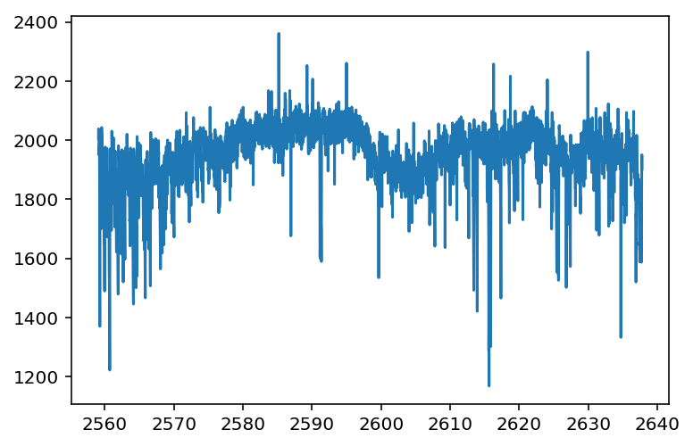

In [2]:
# %load /Users/obsidian/Desktop/defaults.py
import pandas as pd
import numpy as np
import matplotlib.pyplot as plt
%matplotlib inline
%config InlineBackend.figure_format = 'retina'
In [3]:
df = pd.read_csv('EPIC_220171362_lc_demo.csv')
In [4]:
df.head()
Out[4]:
| time | time.1 | flux | flux_err | quality | centroid_col | centroid_row | |
|---|---|---|---|---|---|---|---|
| 0 | 2559.068530 | 2559.068530 | 2005.3784 | 10.014723 | 524288 | 133.677040 | 267.706086 |
| 1 | 2559.088963 | 2559.088963 | 2038.4943 | 10.015197 | 0 | 133.771141 | 267.752643 |
| 2 | 2559.109395 | 2559.109395 | 2014.6719 | 10.015338 | 0 | 133.891013 | 267.766870 |
| 3 | 2559.129827 | 2559.129827 | 2003.8523 | 10.015991 | 0 | 133.964139 | 267.786569 |
| 4 | 2559.150260 | 2559.150260 | 1949.8488 | 10.015699 | 0 | 134.076898 | 267.797198 |
In [5]:
plt.plot(df.time, df.flux)
Out[5]:
[<matplotlib.lines.Line2D at 0xa21e259e8>]

In [ ]: